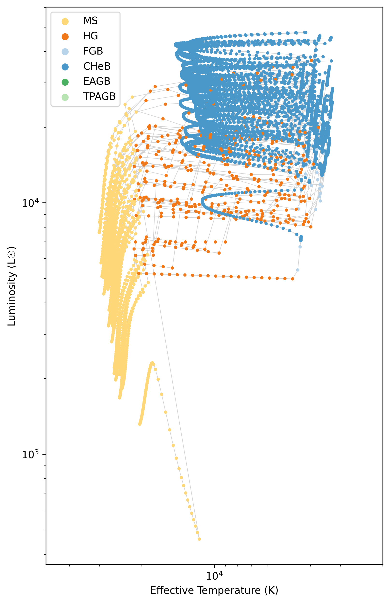
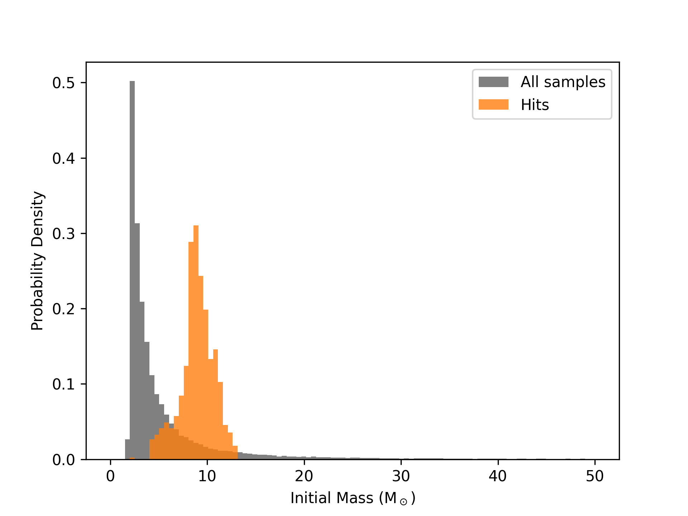
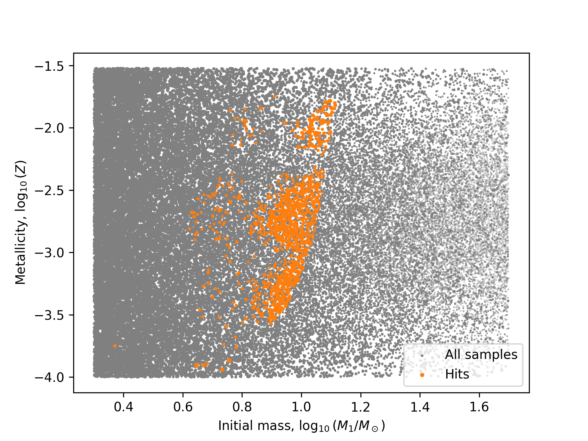

Apply timestep conditions and change evolution columns¶
As in regular COSMIC runs, you can apply timestep conditions and change the columns in the bpp and bcm tables. The AdaptiveSampler accepts the regular timestep_conditions, bpp_columns, and bcm_columns keyword arguments, which are passed to the underlying COSMIC evolve() method. For some background, check out Evolving a single binary for details about columns and Dynamic time resolution for details about timestep conditions.
Blue loops - a worked example¶
Now let’s demonstrate using them all in an example. Let’s say we want to adaptively sample systems with a primary star that underwent a blue loop that exceeds a certain temperature. You can imagine, if we adapted based on the bpp table, we might miss a brief phase of evolution where the binary hits this phase. The bpp table is great for identifying hits when they gets rows in bpp (i.e. have a corresponding evol_type). But sometimes, you need more time resolution for custom situations like this. So, we can use the timestep_conditions to ensure we have enough time resolution to catch this. Then, we can use the bpp_columns and bcm_columns to change the columns in the output tables to only include the information we care about.
- To be specific, our criteria for a hit is that the primary star:
Reaches the core helium burning phase (
kstar_1 == 4)During this phase its temperature increases by at least a factor of 5
By the end of the phase, the temperature is not more than double the initial temperature
- So for this we need to:
Report timesteps during the core helium burning phase, so we can check for the temperature increase
Use the
bcmtable to condition theis_interestingfunctionWrite a custom
is_interestingfunction that checks for the temperature increase and final temperature condition
Step 1: Add timestep conditions¶
First, we can make it so that extra timesteps are reported during the core helium burning phase. We can do this by adding a timestep condition that says “if the stellar type is 4, then set the timestep to 0.0”. In this case, dtp=0.0 just means “report every timestep used internally by COSMIC”. We’ll also add some other timestep conditions to make sure we have enough time resolution during the main sequence and Hertzsprung gap phases so the Hertzsprung-Russell diagram looks nice. So we can do:
timestep_conditions = [
["kstar_1<2", "dtp=1.0"],
["1<kstar_1<4", "dtp=0.01"],
["kstar_1=4", "dtp=0.0"],
["4<kstar_1<10", "dtp=0.5"],
]
Step 2: Change the output columns¶
Next, we can change the output columns in the bpp and bcm tables to only include the information we care about. In this case, we only care about the temperature of the stars, so we can just include that, the luminosity (for an HR-diagram later) and the basic required columns for the bpp and bcm tables. So we can do:
cols = [
"tphys", "mass_1", "mass_2", "kstar_1", "kstar_2",
"evol_type", "porb", "ecc",
"teff_1", "teff_2", "lum_1", "lum_2"
]
Step 3: Write a custom is_interesting function¶
Finally, we can write a custom is_interesting function that checks for the temperature increase and final temperature condition. This function will take in a bcm table for all systems in a batch and return the number of hits and a boolean array of which systems are hits.
def has_blue_loop(bcm):
cHeb_rows = bcm["kstar_1"] == 4
cHeb_bin_nums = bcm["bin_num"][cHeb_rows].unique()
initial_temp = bcm["teff_1"][cHeb_rows].drop_duplicates(subset="bin_num", keep="first")
final_temp = bcm["teff_1"][cHeb_rows].drop_duplicates(subset="bin_num", keep="last")
max_temp = bcm["teff_1"][cHeb_rows].groupby("bin_num").max()
hit_cheb_nums = cHeb_bin_nums[(max_temp >= 5 * initial_temp) & (final_temp <= 2 * initial_temp)]
bin_nums = bcm["bin_num"].unique()
is_hit = np.isin(bin_nums, hit_cheb_nums)
return is_hit.sum(), is_hit
Put it all together¶
Now we can put it all together and run an adaptive sampling simulation with these conditions. We can do this by passing the timestep_conditions, bpp_columns, bcm_columns, and is_interesting function to the AdaptiveSampler (remember to set the is_interesting_args to use the bcm table):
In [2]: BSEDict = {
...: "pts1": 0.001, "pts2": 0.01, "pts3": 0.02, "zsun": 0.014, "windflag": 3,
...: "eddlimflag": 0, "neta": 0.5, "bwind": 0.0, "hewind": 0.5, "beta": 0.125,
...: "xi": 0.5, "acc2": 1.5, "LBV_flag": 1, "alpha1": [1.0, 1.0],
...: "lambdaf": 0.0, "ce2stageflag": 0, "ceflag": 0, "cekickflag": 2,
...: "cemergeflag": 1, "cehestarflag": 0, "qcflag": 5,
...: "qcrit_array": [0.0,0.0,0.0,0.0,0.0,0.0,0.0,0.0,0.0,0.0,0.0,0.0,0.0,0.0,0.0,0.0],
...: "kickflag": 5, "sigma": 265.0, "bhflag": 1, "bhsigmafrac": 1.0,
...: "sigmadiv": -20.0, "ecsn": 2.25, "ecsn_mlow": 1.6, "aic": 1, "ussn": 1,
...: "polar_kick_angle": 90.0,
...: "natal_kick_array": [[-100.0, -100.0, -100.0, -100.0, 0.0], [-100.0, -100.0, -100.0, -100.0, 0.0]],
...: "mm_mu_ns": 400.0, "mm_mu_bh": 200.0, "remnantflag": 4,
...: "fryer_mass_limit": 0, "mxns": 3.0, "fryer_fmix": 1.0,
...: "fryer_mcrit_nsbh": 5.75, "rembar_massloss": 0.5, "wd_mass_lim": 1,
...: "maltsev_mode": 0, "maltsev_fallback": 0.5, "maltsev_pf_prob": 0.1,
...: "pisn": -2, "ppi_co_shift": 0.0, "ppi_extra_ml": 0.0, "bhspinflag": 0,
...: "bhspinmag": 0.0, "grflag": 1, "eddfac": 10, "gamma": -2, "don_lim": -1,
...: "acc_lim": [-1, -1], "smt_periastron_check": 0, "tflag": 1, "ST_tide": 1,
...: "fprimc_array": [2.0/21.0,2.0/21.0,2.0/21.0,2.0/21.0,2.0/21.0,2.0/21.0,2.0/21.0,2.0/21.0,2.0/21.0,2.0/21.0,2.0/21.0,2.0/21.0,2.0/21.0,2.0/21.0,2.0/21.0,2.0/21.0],
...: "ifflag": 1, "wdflag": 1, "epsnov": 0.001, "bdecayfac": 1,
...: "bconst": 3000, "ck": 1000, "rejuv_fac": 1.0, "rejuvflag": 0,
...: "bhms_coll_flag": 0, "htpmb": 1, "ST_cr": 1, "rtmsflag": 0
...: }
...:
import numpy as np
from cosmic.sample.stroopwafel import ParameterSpace, Parameter, AdaptiveSampler
def derive_params(sampled):
"""Provide binary parameters not drawn from the ParameterSpace."""
return {'mass_2': sampled['mass_1'] * sampled['q']}
params = ParameterSpace([
Parameter('mass_1', 2.0, 50.0, dist='kroupa'),
Parameter('q', 0.01, 1.0, dist='uniform'),
Parameter('porb', 10**(0.15), 10**(5.5), dist='sana'),
Parameter('ecc', 1e-9, 0.9999, dist='sana_ecc'),
Parameter('metallicity', 0.0001, 0.03, dist='flat_in_log'),
])
SSEDict = {'stellar_engine': 'sse'}
sampler = AdaptiveSampler(
parameter_space=params,
total_systems=50000,
batch_size=2500,
BSEDict=BSEDict,
SSEDict=SSEDict,
is_interesting=has_blue_loop,
is_interesting_args=["bcm"],
derive_params=derive_params,
reject_systems="default",
nproc=4,
seed=117,
timestep_conditions=timestep_conditions,
bpp_columns=cols,
bcm_columns=cols,
)
results = sampler.run()
hits = results[results.is_hit]
hit_nums = hits.bpp.index.unique().values
Then we can make some plots. Let’s take a look at a random 50 systems that met our hit criteria and plot their HR-diagrams:
kstar_translator = [
{'long': 'Main Sequence (Low mass)', 'short': 'MS < 0.7', 'colour': (0.996078, 0.843476, 0.469158, 1.0)},
{'long': 'Main Sequence', 'short': 'MS', 'colour': (0.996078, 0.843476, 0.469158, 1.0)},
{'long': 'Hertzsprung Gap', 'short': 'HG', 'colour': (0.939608, 0.471373, 0.094902, 1.0)},
{'long': 'First Giant Branch', 'short': 'FGB', 'colour': (0.716186, 0.833203, 0.916155, 1.0)},
{'long': 'Core Helium Burning', 'short': 'CHeB', 'colour': (0.29098, 0.59451, 0.78902, 1.0)},
{'long': 'Early AGB', 'short': 'EAGB', 'colour': (0.294902, 0.690196, 0.384314, 1.0)},
{'long': 'Thermally Pulsing AGB', 'short': 'TPAGB',
'colour': (0.723122, 0.889612, 0.697178, 1.0)},
{'long': 'Helium Main Sequence', 'short': 'HeMS', 'colour': (0.254627, 0.013882, 0.615419, 1.0)},
{'long': 'Helium Hertsprung Gap', 'short': 'HeHG', 'colour': (0.562738, 0.051545, 0.641509, 1.0)},
{'long': 'Helium Giant Branch', 'short': 'HeGB', 'colour': (0.798216, 0.280197, 0.469538, 1.0)},
{'long': 'Helium White Dwarf', 'short': 'HeWD', 'colour': (0.368166, 0.232828, 0.148275, 1.0)},
{'long': 'Carbon/Oxygen White Dwarf', 'short': 'COWD', 'colour': (0.620069, 0.392132, 0.249725, 1.0)},
{'long': 'Oxygen/Neon White Dwarf', 'short': 'ONeWD', 'colour': (0.867128, 0.548372, 0.349225, 1.0)},
{'long': 'Neutron Star', 'short': 'NS', 'colour': (0.501961, 0.501961, 0.501961, 1.0)},
{'long': 'Black Hole', 'short': 'BH', 'colour': (0.0, 0.0, 0.0, 1.0)},
{'long': 'Massless Remnant', 'short': 'MR', 'colour': (1.0, 1.0, 0.0, 1.0)},
{'long': 'Chemically Homogeneous', 'short': 'CHE', 'colour': (0.647059, 0.164706, 0.164706, 1.0)}
]
fig, ax = plt.subplots(figsize=(6, 10))
for BIN_NUM in np.random.choice(hit_nums, size=50, replace=False):
mask = results.bcm["kstar_1"].loc[BIN_NUM] < 7
ax.plot(
results.bcm["teff_1"].loc[BIN_NUM][mask],
results.bcm["lum_1"].loc[BIN_NUM][mask],
color="lightgrey", zorder=-1, lw=0.5
)
ax.scatter(
results.bcm["teff_1"].loc[BIN_NUM][mask],
results.bcm["lum_1"].loc[BIN_NUM][mask], s=5,
c=[kstar_translator[c]['colour']
for c in results.bcm["kstar_1"].loc[BIN_NUM][mask]],
rasterized=True
)
ax.set(
xscale="log",
yscale="log",
xlabel="Effective Temperature (K)",
ylabel="Luminosity (L☉)",
xlim=(5e4, 2e3)
)
for kstar in kstar_translator[1:7]:
ax.scatter([], [], c=[kstar['colour']], label=kstar['short'])
ax.legend()
plt.show()


HR diagram of the first 50 systems that met the blue loop criteria. The color of the points indicates the stellar type of the primary star.¶
Additionally, we can compare what sorts of systems hit the criteria. Let’s compare the initial mass and metallicity of the systems that hit the criteria to those that didn’t:
fig, ax = plt.subplots()
bins = np.linspace(0, 50, 100)
ax.hist(results.initC["mass_1"], weights=results.weights, bins=bins,
density=True, color="grey", label="All samples");
ax.hist(results.initC["mass_1"][results.is_hit], weights=results.weights[results.is_hit],
bins=bins, alpha=0.8, density=True, color="tab:orange", label="Hits");
ax.legend()
ax.set(
xlabel="Initial Mass (M$_\odot$)",
ylabel="Probability Density"
)
plt.show()
fig, ax = plt.subplots()
ax.scatter(
np.log10(results.initC["mass_1"]), np.log10(results.initC["metallicity"]),
s=1 * results.weights, color="grey", label="All samples", rasterized=True
)
ax.scatter(
np.log10(results.initC["mass_1"][results.is_hit]),
np.log10(results.initC["metallicity"][results.is_hit]),
s=5 * results.weights[results.is_hit], color="tab:orange",
label="Hits", rasterized=True
)
ax.legend()
ax.set(
xlabel=r"Initial mass, $\log_{10}(M_1/M_\odot)$",
ylabel=r"Metallicity, $\log_{10}(Z)$"
)
plt.show()


Comparison of the initial mass distribution of the systems that hit the blue loop criteria (orange) to those that didn’t (grey). The histograms are normalized to show probability density.¶


Comparison of the initial mass and metallicity of the systems that hit the blue loop criteria (orange) to those that didn’t (grey). The size of the points indicates the weight of the system.¶
Overall, we can see that the hit systems are located in specific regions of mass-metallicity space, which is what we would expect for systems that undergo blue loops. This demonstrates how you can use the timestep_conditions, bpp_columns, and bcm_columns keyword arguments to customize your adaptive sampling runs in COSMIC.